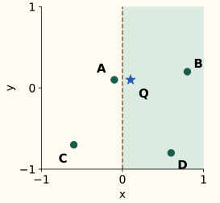
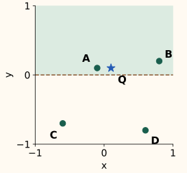

HNSW and Annoy: Two Ways to Avoid Comparing Every Vector
Before you start: vectors and distances, plus the indexing overview. We focus on candidate search, with relevance evaluation linked separately.
A flat exact scan compares a query with every stored vector. Approximate nearest-neighbor search tries to examine a promising subset and still return nearly the same neighbors. Its central risk is easy to state: an excellent item cannot be returned if the search never discovers it.
HNSW discovers candidates by following graph links. Annoy discovers them through partitions of vector space. We will trace both with deliberately small, constructed examples. Their numbers explain the mechanics; they are not production performance measurements.
HNSW: use a sparse hierarchy to reach a useful starting point
HNSW stores each vector as a node in the base graph. A random subset also appears one level up, a smaller subset appears above that, and so on. A node promoted to a high level remains present below it. These are nested sets of the same vectors, not separately trained embeddings.
Search starts at the top entry point, follows links to closer nodes, then descends from the best position found. In the paper’s query algorithm, upper levels use greedy search; the base level performs the broader exploration described below. Malkov and Yashunin, Algorithms 2 and 5.
Keep “waiting to explore” separate from “best found”
At the base layer, keep a frontier of discovered nodes whose outgoing links may still be explored, and a retained set of the best candidates found so far. The search setting ef, often called efSearch, limits that retained set. The requested output count is K; here K = 1.
Pop the closest frontier node. Examine its previously unseen neighbors. A neighbor enters the frontier and retained set if there is room, or if it is closer than the worst retained candidate. When the retained set grows beyond ef, remove its worst member. A seen-node set avoids repeated distance calculations.
The standard stopping rule ends exploration when the closest pending node is worse than the worst retained candidate. That node’s unexplored neighborhood might still contain something better: the rule is an approximation, not a proof of global optimality. The hnswlib search implementation makes the candidate and retained queues explicit.
Squared distance to query: P 100 · S 36 · A 20 · B 29 · C 2
With ef = 1, expanding S retains A and rejects the farther B. A has no route onward except back to S, so search returns A. With ef = 2, B remains available; expanding it discovers C, which becomes the returned neighbor. P can remain pending even after leaving the retained set, until the stopping rule discards further exploration.
ef is not a limit on visited nodes or distance computations. With ef = 2, this trace evaluates all five vectors and can hold three pending nodes while retaining only two. Real costs depend on the graph and query. hnswlib requires ef to be at least K; library names and details should be recorded with the benchmark. hnswlib parameter definitions.
Where the graph’s distances come from
The query is (0, 0). Use vectors P=(8, 6), S=(6, 0), A=(4, 2), B=(5, −2) and C=(1, −1). Squaring and adding coordinate differences gives 100, 36, 20, 29 and 2. Squared Euclidean distance has the same ordering as Euclidean distance, so square roots are unnecessary for this trace.
Build choices determine which routes will exist
During insertion, a new vector searches for candidate neighbors, chooses connections, and may cause existing connection lists to be pruned. Choosing diverse directions can preserve useful routes; connecting only to a tight group of very similar nodes can leave poor access to another region. Larger query effort explores the graph you built; it does not add missing links. The paper’s neighbor-selection heuristic addresses this navigation problem.
| Setting | Controls | Cost to inspect |
|---|---|---|
| M | Connection budget during construction; exact per-level limits vary | Graph memory, connectivity and build work |
| efConstruction | Candidate exploration while inserting vectors | Build time and the quality of selected links |
| efSearch / ef | Retained candidate capacity during a query | Distance computations and recall on the built graph |
| K | How many neighbors the caller requests | Output size and the minimum compatible search effort |
More effort can improve recall, but it is not a universal latency formula or a guarantee that every individual query improves. Benchmark your vector distribution, insertion order and settings. HNSW also stores graph links and bookkeeping in addition to vectors; vector bytes alone understate its memory footprint.
Annoy: reach candidates through several partitions
A projection split separates a region into two sides. Repeated splits form a tree whose leaves contain candidate IDs. A query tends to follow its side of a split first, but a nearby item can sit just across the boundary. Several trees provide different partitions; broader search can revisit alternative branches.
The diagrams below use two hand-chosen one-split trees. Query Q=(0.1, 0.1) is just right of the vertical boundary. Its nearest item A=(−0.1, 0.1) is just left of it. The horizontal tree instead puts Q and A on the same side. Compare the candidate sets before scoring their distances.


The vertical query-side leaf contains B and D. Their squared distances are 0.50 and 1.06, so B wins. The horizontal leaf contains A and B; A has squared distance 0.04 and wins. Combining those leaves gives A, B and D after deduplication. Exploring both sides of the vertical split also finds A, at the cost of scoring C as well.
Annoy’s actual search uses a priority queue over tree nodes and alternative branches, then deduplicates candidate IDs and scores them. Its Euclidean split implementation uses a randomized two-center procedure to construct a separating plane; it is not limited to axis-aligned splits like our drawing. Annoy source: two_means, Euclidean::create_split and _get_all_nns.
n_trees is a build-time choice affecting index size and construction. search_k controls query effort; its default is the requested neighbor count multiplied by the number of trees. Set it explicitly when comparing different K or tree counts. It is a search budget, not a promise of that many unique distance evaluations. Annoy’s API and tradeoffs.
The normal Annoy workflow builds and saves an immutable index that processes can memory-map. Adding new items requires rebuilding the built index. Pages loaded on demand can make early queries slower than warm queries, so loading a file and measuring steady-state search are separate experiments.
Match the distance before comparing the indexes
Raw inner product rewards alignment and can also reward a large vector norm. Cosine similarity divides out the norms. For example, with query (1, 0), item U=(1, 0) has cosine 1 and dot product 1; V=(2, 2) has cosine about 0.707 but dot product 2. The two objectives choose different winners.
For unit-length vectors, the relationship is simpler. Write $q$ for the normalized query and $x$ for a normalized item. Their dot product $q^\top x$ equals their cosine similarity. Expanding squared Euclidean distance gives:
Thus maximizing cosine and minimizing Euclidean distance produce the same ordering for these normalized vectors. Annoy’s angular distance is the square root of this quantity: a cosine of 0.8 corresponds to squared distance 0.4 and angular distance about 0.632. Report the score the API returns, and handle zero vectors before normalization.
Use the workload to choose the operating point
An index that shares an immutable file across processes and a graph that supports incremental insertion solve different operational problems. Check the specific library’s update, deletion and filtering support, together with vector dimension, memory, build time and target recall. Neither algorithm has a universal winning setting.
Exact scoring of discovered candidates cannot recover a neighbor that candidate discovery missed. It also cannot repair an embedding that ranks irrelevant items nearby. Use the stage-diagnosis chapter for that distinction, and the next chapter to measure approximation and cost under a controlled workload.
References and further reading
- Malkov and Yashunin: HNSW — nested graph levels, layer search, insertion and navigation-aware neighbor selection.
- hnswlib: algorithm parameters — the meaning of M, construction effort and query ef, including its relationship to K.
- hnswlib: search implementation — separate candidate and retained queues, visited nodes and stopping conditions.
- Spotify Annoy: API and tradeoffs — build versus query settings, angular distance, index immutability and memory-mapped loading.
- Annoy: split and search implementation — randomized two-center splits, prioritized branch exploration, candidate deduplication and distance scoring.